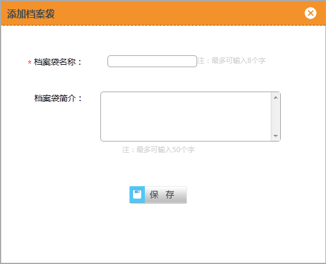
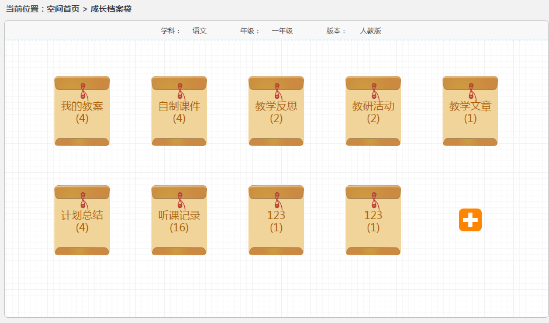
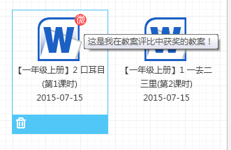

3.2.11 成长档案袋
1、档案袋操作
（1）新建档案袋 ：点击“添加”按钮，弹出添加档案袋对话框，输入档案名称、档案简介，点击“保存”即可完成新建档案袋（如图3.2.11-1）。
2、内容管理（以教学设计为例）
（1）教案精选
打开“成长档案袋”（如图3.2.11-2）后选择“教学设计”（如图3.2.11-3），点击右上角“精选”按钮进入精选界面（如图3.2.11-4），点击右侧“☆”即可将其选为精选内容，还可添加“微评”帮助记忆区分（如图3.2.11-5）。取消精选点击“★”即可。
（2）已经精选教学设计查看
查看微评：鼠标悬停在 上，显示微评信息，点击 图标（曾经给教案写过微评），可以修改微评信息。（如图3.2.11-6）
（3）点击课件，以不可以编辑的word形式打开课件。